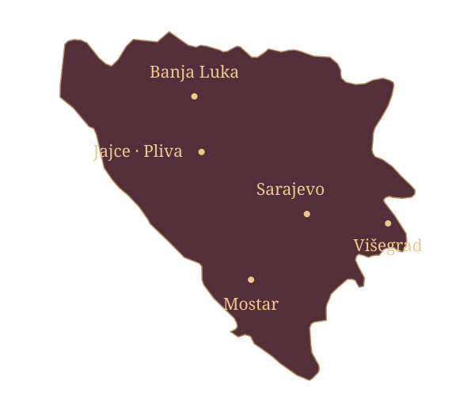
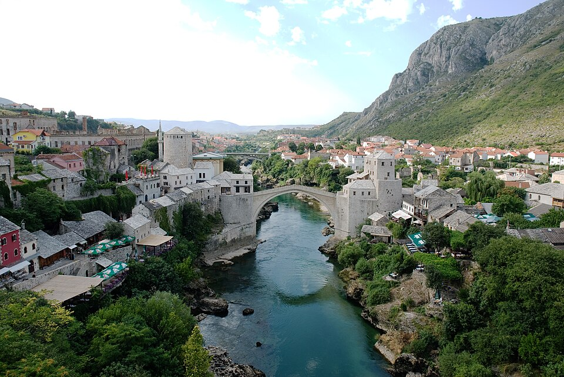

Muzičko putovanje kroz Bosnu i Hercegovinu
Karta sevdaha
Klikni na grad.
Pronađi pjesmu koja ga pamti.

BIH / 01—05Mostar: Emina

Mostar · Neretva i Stari most
05 / HERCEGOVINA
Mostar
„Emina“ vodi u mostarsku avliju. U stihovima Alekse Šantića jedan pogled, ruže i miris jasmina postaju cijela priča o čežnji.
Emina
Himzo Polovina
Travnik
Što se ono Travnik zamaglio
Pjesma počinje pitanjem o gradu pod maglom. Odgovor vodi prema djevojci čiji pogled, slikovito, zapali čitav Travnik.
Pročitaj pjesmu ↗Trebinje
U Trebinju gradu
Pjesma govori o smrti mlade Zlate i njenim posljednjim riječima majci. Grad iz prvog stiha postaje mjesto zajedničke tuge.
Pročitaj pjesmu · PDF ↗Tuzla
Ječam žele Tuzlanke djevojke
Dok žanju ječam, djevojke razmišljaju o udaji i svatovima. Kratak razgovor sa žitom otkriva njihove želje i iščekivanje.
Pročitaj pjesmu ↗